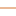

<!doctype html>
<html lang="en">
    <head>
        <meta charset="utf-8">
        <meta http-equiv="X-UA-Compatible" content="IE=edge">
        <meta name="viewport" content="initial-scale=1,user-scalable=no,maximum-scale=1,width=device-width">
        <meta name="mobile-web-app-capable" content="yes">
        <meta name="apple-mobile-web-app-capable" content="yes">
        <link rel="stylesheet" href="css/leaflet.css">
        <link rel="stylesheet" href="css/L.Control.Layers.Tree.css">
        <link rel="stylesheet" href="css/L.Control.Locate.min.css">
        <link rel="stylesheet" href="css/qgis2web.css">
        <link rel="stylesheet" href="css/fontawesome-all.min.css">
        <link rel="stylesheet" href="css/leaflet-search.css">
        <link rel="stylesheet" href="css/leaflet-control-geocoder.Geocoder.css">
        <link rel="stylesheet" href="css/leaflet-measure.css">
        <style>
        html, body, #map {
            width: 100%;
            height: 100%;
            padding: 0;
            margin: 0;
        }
        </style>
        <title>Adresses Lafe2-Baleng,Bafoussam</title>
    </head>
    <body>
        <div id="map">
        </div>
        <script src="js/qgis2web_expressions.js"></script>
        <script src="js/leaflet.js"></script>
        <script src="js/L.Control.Layers.Tree.min.js"></script>
        <script src="js/L.Control.Locate.min.js"></script>
        <script src="js/leaflet.rotatedMarker.js"></script>
        <script src="js/leaflet.pattern.js"></script>
        <script src="js/leaflet-hash.js"></script>
        <script src="js/Autolinker.min.js"></script>
        <script src="js/rbush.min.js"></script>
        <script src="js/labelgun.min.js"></script>
        <script src="js/labels.js"></script>
        <script src="js/leaflet-control-geocoder.Geocoder.js"></script>
        <script src="js/leaflet-measure.js"></script>
        <script src="js/proj4.js"></script>
        <script src="js/proj4leaflet.js"></script>
        <script src="js/leaflet-search.js"></script>
        <script src="data/LAFE2BALENG_1.js"></script>
        <script src="data/VoiesdaccesLafe2Baleng_2.js"></script>
        <script src="data/BatimentsLafe2Baleng_3.js"></script>
        <script>
        var highlightLayer;
        function highlightFeature(e) {
            highlightLayer = e.target;

            if (e.target.feature.geometry.type === 'LineString' || e.target.feature.geometry.type === 'MultiLineString') {
              highlightLayer.setStyle({
                color: '#ffff00',
              });
            } else {
              highlightLayer.setStyle({
                fillColor: '#ffff00',
                fillOpacity: 1
              });
            }
            highlightLayer.openPopup();
        }
        var crs = new L.Proj.CRS('EPSG:32632', '+proj=utm +zone=32 +datum=WGS84 +units=m +no_defs', {
            resolutions: [2800, 1400, 700, 350, 175, 84, 42, 21, 11.2, 5.6, 2.8, 1.4, 0.7, 0.35, 0.14, 0.07],
        });
        var map = L.map('map', {
            crs: crs,
            continuousWorld: false,
            worldCopyJump: false, 
            zoomControl:false, maxZoom:28, minZoom:2
        }).fitBounds([[5.5049810188064745,10.391972346995919],[5.5146019754066735,10.408394014782703]]);
        var hash = new L.Hash(map);
        map.attributionControl.setPrefix('<a href="https://github.com/tomchadwin/qgis2web" target="_blank">qgis2web</a> &middot; <a href="https://leafletjs.com" title="A JS library for interactive maps">Leaflet</a> &middot; <a href="https://qgis.org">QGIS</a>');
        var autolinker = new Autolinker({truncate: {length: 30, location: 'smart'}});
        // remove popup's row if "visible-with-data"
        function removeEmptyRowsFromPopupContent(content, feature) {
         var tempDiv = document.createElement('div');
         tempDiv.innerHTML = content;
         var rows = tempDiv.querySelectorAll('tr');
         for (var i = 0; i < rows.length; i++) {
             var td = rows[i].querySelector('td.visible-with-data');
             var key = td ? td.id : '';
             if (td && td.classList.contains('visible-with-data') && feature.properties[key] == null) {
                 rows[i].parentNode.removeChild(rows[i]);
             }
         }
         return tempDiv.innerHTML;
        }
        // add class to format popup if it contains media
		function addClassToPopupIfMedia(content, popup) {
			var tempDiv = document.createElement('div');
			tempDiv.innerHTML = content;
			if (tempDiv.querySelector('td img')) {
				popup._contentNode.classList.add('media');
					// Delay to force the redraw
					setTimeout(function() {
						popup.update();
					}, 10);
			} else {
				popup._contentNode.classList.remove('media');
			}
		}
        var title = new L.Control({'position':'topright'});
        title.onAdd = function (map) {
            this._div = L.DomUtil.create('div', 'info');
            this.update();
            return this._div;
        };
        title.update = function () {
            this._div.innerHTML = '<h2>Adresses Lafe2-Baleng,Bafoussam</h2>';
        };
        title.addTo(map);
        var abstract = new L.Control({'position':'topright'});
        abstract.onAdd = function (map) {
            this._div = L.DomUtil.create('div',
            'leaflet-control abstract');
            this._div.id = 'abstract'

                abstract.show();
                return this._div;
            };
            abstract.show = function () {
                this._div.classList.remove("abstract");
                this._div.classList.add("abstractUncollapsed");
                this._div.innerHTML = 'cette carte presente le quartier Lafe2-Baleng dans la ville de bafoussam elle permet de s\'orienter aisaiment dans la zone et elle facilite ainsi donc le reperage et l\'orientation dans lafe2-baleng';
        };
        abstract.addTo(map);
        var zoomControl = L.control.zoom({
            position: 'topleft'
        }).addTo(map);
        L.control.locate({locateOptions: {maxZoom: 19}}).addTo(map);
        var measureControl = new L.Control.Measure({
            position: 'topleft',
            primaryLengthUnit: 'feet',
            secondaryLengthUnit: 'miles',
            primaryAreaUnit: 'sqfeet',
            secondaryAreaUnit: 'sqmiles'
        });
        measureControl.addTo(map);
        document.getElementsByClassName('leaflet-control-measure-toggle')[0].innerHTML = '';
        document.getElementsByClassName('leaflet-control-measure-toggle')[0].className += ' fas fa-ruler';
        var bounds_group = new L.featureGroup([]);
        function setBounds() {
            map.setMaxBounds(map.getBounds());
        }
        map.createPane('pane_GoogleTerrain_0');
        map.getPane('pane_GoogleTerrain_0').style.zIndex = 400;
        var layer_GoogleTerrain_0 = L.tileLayer('https://mt1.google.com/vt/lyrs=p&x={x}&y={y}&z={z}', {
            pane: 'pane_GoogleTerrain_0',
            opacity: 1.0,
            attribution: '<a href="https://www.google.at/permissions/geoguidelines/attr-guide.html">Map data ©2015 Google</a>',
            minZoom: 2,
            maxZoom: 28,
            minNativeZoom: 0,
            maxNativeZoom: 20
        });
        layer_GoogleTerrain_0;
        map.addLayer(layer_GoogleTerrain_0);
        function pop_LAFE2BALENG_1(feature, layer) {
            layer.on({
                mouseout: function(e) {
                    for (var i in e.target._eventParents) {
                        if (typeof e.target._eventParents[i].resetStyle === 'function') {
                            e.target._eventParents[i].resetStyle(e.target);
                        }
                    }
                    if (typeof layer.closePopup == 'function') {
                        layer.closePopup();
                    } else {
                        layer.eachLayer(function(feature){
                            feature.closePopup()
                        });
                    }
                },
                mouseover: highlightFeature,
            });
            var popupContent = '<table>\
                    <tr>\
                        <td colspan="2">' + (feature.properties['superficie'] !== null ? autolinker.link(feature.properties['superficie'].toLocaleString()) : '') + '</td>\
                    </tr>\
                    <tr>\
                        <td colspan="2"><strong>nom</strong><br />' + (feature.properties['nom'] !== null ? autolinker.link(feature.properties['nom'].toLocaleString()) : '') + '</td>\
                    </tr>\
                </table>';
            var content = removeEmptyRowsFromPopupContent(popupContent, feature);
			layer.on('popupopen', function(e) {
				addClassToPopupIfMedia(content, e.popup);
			});
			layer.bindPopup(content, { maxHeight: 400 });
        }

        function style_LAFE2BALENG_1_0() {
            return {
                pane: 'pane_LAFE2BALENG_1',
                opacity: 1,
                color: 'rgba(35,35,35,1.0)',
                dashArray: '',
                lineCap: 'butt',
                lineJoin: 'miter',
                weight: 2.0, 
                fill: true,
                fillOpacity: 1,
                fillColor: 'rgba(196,60,57,0.00784313725490196)',
                interactive: true,
            }
        }
        map.createPane('pane_LAFE2BALENG_1');
        map.getPane('pane_LAFE2BALENG_1').style.zIndex = 401;
        map.getPane('pane_LAFE2BALENG_1').style['mix-blend-mode'] = 'normal';
        var layer_LAFE2BALENG_1 = new L.geoJson(json_LAFE2BALENG_1, {
            attribution: '',
            interactive: true,
            dataVar: 'json_LAFE2BALENG_1',
            layerName: 'layer_LAFE2BALENG_1',
            pane: 'pane_LAFE2BALENG_1',
            onEachFeature: pop_LAFE2BALENG_1,
            style: style_LAFE2BALENG_1_0,
        });
        bounds_group.addLayer(layer_LAFE2BALENG_1);
        map.addLayer(layer_LAFE2BALENG_1);
        function pop_VoiesdaccesLafe2Baleng_2(feature, layer) {
            layer.on({
                mouseout: function(e) {
                    for (var i in e.target._eventParents) {
                        if (typeof e.target._eventParents[i].resetStyle === 'function') {
                            e.target._eventParents[i].resetStyle(e.target);
                        }
                    }
                    if (typeof layer.closePopup == 'function') {
                        layer.closePopup();
                    } else {
                        layer.eachLayer(function(feature){
                            feature.closePopup()
                        });
                    }
                },
                mouseover: highlightFeature,
            });
            var popupContent = '<table>\
                    <tr>\
                        <td colspan="2">' + (feature.properties['osm_id'] !== null ? autolinker.link(feature.properties['osm_id'].toLocaleString()) : '') + '</td>\
                    </tr>\
                    <tr>\
                        <th scope="row">name</th>\
                        <td>' + (feature.properties['name'] !== null ? autolinker.link(feature.properties['name'].toLocaleString()) : '') + '</td>\
                    </tr>\
                    <tr>\
                        <td colspan="2">' + (feature.properties['ref'] !== null ? autolinker.link(feature.properties['ref'].toLocaleString()) : '') + '</td>\
                    </tr>\
                    <tr>\
                        <th scope="row">type</th>\
                        <td>' + (feature.properties['type'] !== null ? autolinker.link(feature.properties['type'].toLocaleString()) : '') + '</td>\
                    </tr>\
                    <tr>\
                        <td colspan="2">' + (feature.properties['oneway'] !== null ? autolinker.link(feature.properties['oneway'].toLocaleString()) : '') + '</td>\
                    </tr>\
                    <tr>\
                        <td colspan="2">' + (feature.properties['maxspeed'] !== null ? autolinker.link(feature.properties['maxspeed'].toLocaleString()) : '') + '</td>\
                    </tr>\
                </table>';
            var content = removeEmptyRowsFromPopupContent(popupContent, feature);
			layer.on('popupopen', function(e) {
				addClassToPopupIfMedia(content, e.popup);
			});
			layer.bindPopup(content, { maxHeight: 400 });
        }

        function style_VoiesdaccesLafe2Baleng_2_0(feature) {
            switch(String(feature.properties['type'])) {
                case 'path':
                    return {
                pane: 'pane_VoiesdaccesLafe2Baleng_2',
                opacity: 1,
                color: 'rgba(220,141,85,1.0)',
                dashArray: '',
                lineCap: 'square',
                lineJoin: 'bevel',
                weight: 1.0,
                fillOpacity: 0,
                interactive: true,
            }
                    break;
                case 'residential':
                    return {
                pane: 'pane_VoiesdaccesLafe2Baleng_2',
                opacity: 1,
                color: 'rgba(253,64,108,1.0)',
                dashArray: '',
                lineCap: 'square',
                lineJoin: 'bevel',
                weight: 1.0,
                fillOpacity: 0,
                interactive: true,
            }
                    break;
                case 'tertiary':
                    return {
                pane: 'pane_VoiesdaccesLafe2Baleng_2',
                opacity: 1,
                color: 'rgba(136,24,28,1.0)',
                dashArray: '',
                lineCap: 'square',
                lineJoin: 'bevel',
                weight: 1.0,
                fillOpacity: 0,
                interactive: true,
            }
                    break;
            }
        }
        map.createPane('pane_VoiesdaccesLafe2Baleng_2');
        map.getPane('pane_VoiesdaccesLafe2Baleng_2').style.zIndex = 402;
        map.getPane('pane_VoiesdaccesLafe2Baleng_2').style['mix-blend-mode'] = 'normal';
        var layer_VoiesdaccesLafe2Baleng_2 = new L.geoJson(json_VoiesdaccesLafe2Baleng_2, {
            attribution: '',
            interactive: true,
            dataVar: 'json_VoiesdaccesLafe2Baleng_2',
            layerName: 'layer_VoiesdaccesLafe2Baleng_2',
            pane: 'pane_VoiesdaccesLafe2Baleng_2',
            onEachFeature: pop_VoiesdaccesLafe2Baleng_2,
            style: style_VoiesdaccesLafe2Baleng_2_0,
        });
        bounds_group.addLayer(layer_VoiesdaccesLafe2Baleng_2);
        map.addLayer(layer_VoiesdaccesLafe2Baleng_2);
        function pop_BatimentsLafe2Baleng_3(feature, layer) {
            layer.on({
                mouseout: function(e) {
                    for (var i in e.target._eventParents) {
                        if (typeof e.target._eventParents[i].resetStyle === 'function') {
                            e.target._eventParents[i].resetStyle(e.target);
                        }
                    }
                    if (typeof layer.closePopup == 'function') {
                        layer.closePopup();
                    } else {
                        layer.eachLayer(function(feature){
                            feature.closePopup()
                        });
                    }
                },
                mouseover: highlightFeature,
            });
            var popupContent = '<table>\
                    <tr>\
                        <td colspan="2">' + (feature.properties['osm_id'] !== null ? autolinker.link(feature.properties['osm_id'].toLocaleString()) : '') + '</td>\
                    </tr>\
                    <tr>\
                        <th scope="row">name</th>\
                        <td>' + (feature.properties['name'] !== null ? autolinker.link(feature.properties['name'].toLocaleString()) : '') + '</td>\
                    </tr>\
                    <tr>\
                        <td colspan="2"><strong>type</strong><br />' + (feature.properties['type'] !== null ? autolinker.link(feature.properties['type'].toLocaleString()) : '') + '</td>\
                    </tr>\
                </table>';
            var content = removeEmptyRowsFromPopupContent(popupContent, feature);
			layer.on('popupopen', function(e) {
				addClassToPopupIfMedia(content, e.popup);
			});
			layer.bindPopup(content, { maxHeight: 400 });
        }

        function style_BatimentsLafe2Baleng_3_0() {
            return {
                pane: 'pane_BatimentsLafe2Baleng_3',
                opacity: 1,
                color: 'rgba(35,35,35,1.0)',
                dashArray: '',
                lineCap: 'butt',
                lineJoin: 'miter',
                weight: 1, 
                fill: true,
                fillOpacity: 1,
                fillColor: 'rgba(162,151,155,1.0)',
                interactive: true,
            }
        }
        map.createPane('pane_BatimentsLafe2Baleng_3');
        map.getPane('pane_BatimentsLafe2Baleng_3').style.zIndex = 403;
        map.getPane('pane_BatimentsLafe2Baleng_3').style['mix-blend-mode'] = 'normal';
        var layer_BatimentsLafe2Baleng_3 = new L.geoJson(json_BatimentsLafe2Baleng_3, {
            attribution: '',
            interactive: true,
            dataVar: 'json_BatimentsLafe2Baleng_3',
            layerName: 'layer_BatimentsLafe2Baleng_3',
            pane: 'pane_BatimentsLafe2Baleng_3',
            onEachFeature: pop_BatimentsLafe2Baleng_3,
            style: style_BatimentsLafe2Baleng_3_0,
        });
        bounds_group.addLayer(layer_BatimentsLafe2Baleng_3);
        map.addLayer(layer_BatimentsLafe2Baleng_3);
        var osmGeocoder = new L.Control.Geocoder({
            collapsed: true,
            position: 'topleft',
            text: 'Search',
            title: 'Testing'
        }).addTo(map);
        document.getElementsByClassName('leaflet-control-geocoder-icon')[0]
        .className += ' fa fa-search';
        document.getElementsByClassName('leaflet-control-geocoder-icon')[0]
        .title += 'Search for a place';
        var baseMaps = {};
        var overlaysTree = [
            {label: ' Batiments Lafe2-Baleng', layer: layer_BatimentsLafe2Baleng_3},
            {label: 'Voies d\'acces  Lafe2-Baleng<br /><table><tr><td style="text-align: center;"></td><td>path</td></tr><tr><td style="text-align: center;"></td><td>residential</td></tr><tr><td style="text-align: center;"></td><td>tertiary</td></tr></table>', layer: layer_VoiesdaccesLafe2Baleng_2},
            {label: ' LAFE2-BALENG ', layer: layer_LAFE2BALENG_1},
            {label: "Google Terrain", layer: layer_GoogleTerrain_0},]
        var lay = L.control.layers.tree(null, overlaysTree,{
            //namedToggle: true,
            //selectorBack: false,
            //closedSymbol: '&#8862; &#x1f5c0;',
            //openedSymbol: '&#8863; &#x1f5c1;',
            //collapseAll: 'Collapse all',
            //expandAll: 'Expand all',
            collapsed: true,
        });
        lay.addTo(map);
        setBounds();
        var i = 0;
        layer_VoiesdaccesLafe2Baleng_2.eachLayer(function(layer) {
            var context = {
                feature: layer.feature,
                variables: {}
            };
            layer.bindTooltip((layer.feature.properties['name'] !== null?String('<div style="color: #323232; font-size: 7pt; font-weight: bold; font-family: \'Open Sans\', sans-serif;">' + layer.feature.properties['name']) + '</div>':''), {permanent: true, offset: [-0, -16], className: 'css_VoiesdaccesLafe2Baleng_2'});
            labels.push(layer);
            totalMarkers += 1;
              layer.added = true;
              addLabel(layer, i);
              i++;
        });
        var i = 0;
        layer_BatimentsLafe2Baleng_3.eachLayer(function(layer) {
            var context = {
                feature: layer.feature,
                variables: {}
            };
            layer.bindTooltip((layer.feature.properties['name'] !== null?String('<div style="color: #323232; font-size: 5pt; font-family: \'Open Sans\', sans-serif;">' + layer.feature.properties['name']) + '</div>':''), {permanent: true, offset: [-0, -16], className: 'css_BatimentsLafe2Baleng_3'});
            labels.push(layer);
            totalMarkers += 1;
              layer.added = true;
              addLabel(layer, i);
              i++;
        });
        map.addControl(new L.Control.Search({
            layer: layer_BatimentsLafe2Baleng_3,
            initial: false,
            hideMarkerOnCollapse: true,
            propertyName: 'name'}));
        document.getElementsByClassName('search-button')[0].className +=
         ' fa fa-binoculars';
        resetLabels([layer_VoiesdaccesLafe2Baleng_2,layer_BatimentsLafe2Baleng_3]);
        map.on("zoomend", function(){
            resetLabels([layer_VoiesdaccesLafe2Baleng_2,layer_BatimentsLafe2Baleng_3]);
        });
        map.on("layeradd", function(){
            resetLabels([layer_VoiesdaccesLafe2Baleng_2,layer_BatimentsLafe2Baleng_3]);
        });
        map.on("layerremove", function(){
            resetLabels([layer_VoiesdaccesLafe2Baleng_2,layer_BatimentsLafe2Baleng_3]);
        });
        </script>
    </body>
</html>
